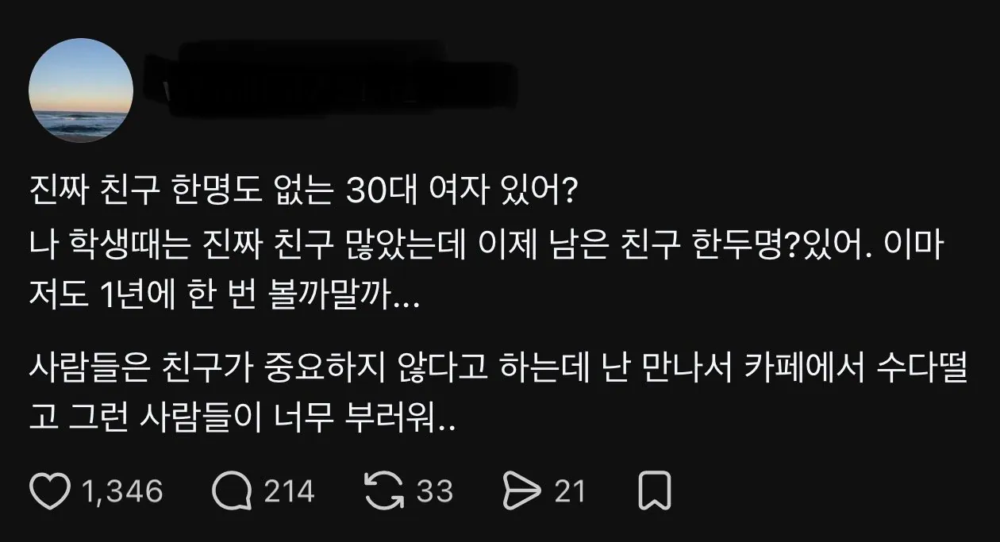

https://theqoo.net/square/4400944389

https://theqoo.net/square/4400944389

그래도 그건 좋게풀려서 뜸해지는건데
인생 안풀려서 잠수타는 케이스도 많음 이건 안타까움
난 엄마랑 친함
찐친3 간친2
간첩친구??
간친은 뭐임
어느정도 가면을 쓰고 대하는 친구중에 자주 보는 친구
아니 왜 간친임?
간장친구
간보는 친구? 간사한 친구? 도대체 무슨 줄임말이지 ㅋㅋ
간간히 보는 친구?
직장동료가 있잖아
승희랑 개붕이들 있는데 친구가 왜없어 ㅋㅋ
애드블럭으로 친구비 안 내잖아
여자는 친구 없는 사람 좀 많아
여기가 개드립인걸 고려해도 세상 각박해진게 느껴지네
나도 생각해보니 나이 먹으면서 돈 때문에, 인생 곡절 때문에,
사소하게는 싸가지 없다는 등등의 이유로 손절하고 당하고 주변 사람들이 없어짐
찐친이 와이프말곤 없음
인터넷이 있잖아
한국은 동갑끼리만 친구라서
고등학교 대학교 넘기면 친구 못사귀지않음?
나도 고등학교 대학교 친구가 전부인데
친구들 타지에 있고 결혼도 다 하니까 평소엔 진짜 만날일이 없음
총각땐 그냥 막 넘어와서 보고 그랬는데 명절에 한번 볼까말까 하고
결국은 독고다이인거같다
회사에서 어느정도 눈치있게만 행동하고
남에게 피해주지 않을 정도만 하면되지
다만, 워낙 위 선배들은 위계질서가 빡셀때
직장생활들 하셔서 후배직원들이 마음에 안들고
싸가지 없단 생각들겠지만..
근데 어떻게 학교생활,사회생활하면서 친구가 없을 수 있는거임? 얼굴이 빻았거나 키가 작아서 이성을 못만나는건 백번 양보해서 선천적이니깐 어쩔수없다 이해하는데 동성친구는 그런게 필요한것도 아니잖아? 성인 돼서 친구 필요없다뭐다하는 사람보면 그냥 사회성+인성 하자 있는 인간으로 밖에 안보임
왕따당하면 돼!
그래서 사회초년생까진 많다가 나이먹을수록 점점줄어듦
줄어드는 기점이 결혼식 하고나서 크게정리되고
애기 낳으면 찐친들만 남음
그마저도 소득수준 비슷해야오래감
물론예외는있으니 주변도르 안가져와도됨
나도 친구들 없음 요즘 할게 많아서 굳이란 싶네?
여자들은 20대이후 친구는 아이들 유치원 들어가서 거기 엄마들이랑 친해지고 동네친구 되는거같음
중 고딩때 친구 30까지 만나는중
성년 될 때까지 동성보다 이성 친구가 더 많으면 보통
원래 힘들거나 몰입할 일이 생기면 가족빼고 연락다끊는 스타일인데 30까지는 그래도 그럭저럭 친구남아있었는데 30넘으니 서서히 다 사라지더라. 이것도 사회성 하자라면 하자지.
나한테 친구관계는 짊어지고 유지하기에 너무무거운듯
상호적 관계.. 너무 비효율적
나도 어느순간부터 학교 친구들이랑 연락을 안하게 되더라 .....
1년에 한번씩만이라도 꾸준히 연락하면됨 그게 진짜 친구지
학생때도 없었어
결혼해서 남편이 절친이면 됨
근데 애인도없으면 ㅈ되긴함 ;;
예로부터 여자가 오래사는 이유는 친구들이 죽을때 되면 살려서 노래같이 불러주고 밥 같이 먹어주고 해서라고 했는디
친구라도없으면 ㄹㅇ 남자랑 같은꼴나는거지
친구 애인 없이 산 지 몇 년 되었지만 복싱 주짓수에 정신을 쏟으니 외로움은 지나가는 스몰토킹만 해도 충분한 거 같다.. 다가오는 독거노인 처지를 위해 고독에 맞서 싸울 준비를 하는 중이다
여자인데 여자인 친구없고 주변에 남자들만 있는 애들 있는데 이런 애들 무조건 걸러라
여자친구 말고 없엉 ㅠ
제발 나랑 친구 해줘.
근데 너무 가까이 오면 부담스러우니까 조금 떨어져 있어 줘.
그래도 10m 안에는 있어 줘.
그러면 또 나가서 사람만나고 관계를 만들어야 하는데 요즘은 쉽지않지
나도 비슷한데 꽤 많구나
친구가 없고 부모가 없고 가족이 없는게 뭐가 문제겠나
사람이 책한권보다 더 많은 info뿐만 아니라 감성 사회화등 삶이 내인생이 들어오면서 더 풍요로와 지는거야. 사람에게 습득하는게 제일 빠르더라
책 영화 드라마 노래등이 다 좋은 것만 있는것이 아니듯 사람도 마찬가지니 가려만나
30대부터 점점 멀어지는듯 결혼 육아 회사일 이런 복합적인 이유로